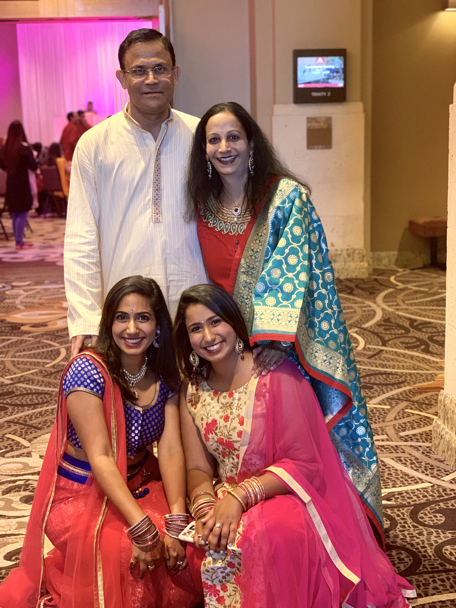
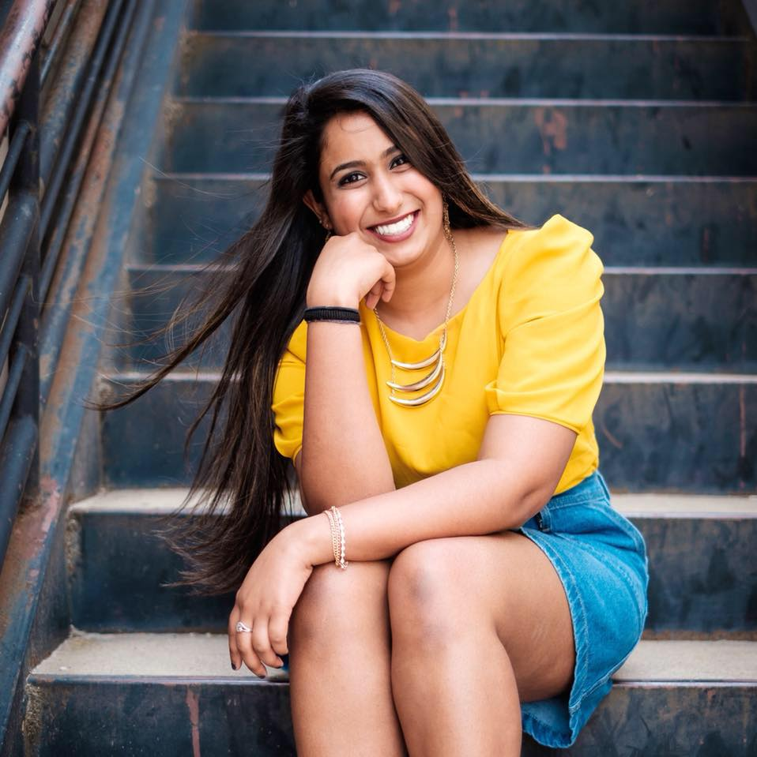

About Me
Hi! I was born and raised in Plano, Texas, which is a suburb of Dallas.
I am a very outgoing and social person and in my free time I love cooking, baking, and participating in water and outdoor activities.
Another one of my passions include traveling and seeing new things everyday. In my opinion traveling isn't just seeing the pretty things. It is about
actually going to the place and seeing the good, the bad, and the ugly parts of every place.
I attend Texas A&M Univeristy in College Station, Texas. I have lived in Texas all my life and honestly A&M was not my first choice
for college. However, ever since I have come here, I can proudly say that this is the best decision I have ever made. Coming to
A&M not only has helped me make my best friends but it has also helped me make the most of my education. I am part of organizations
such as Aggie Recruitment Committee,
Aggie Golden Arrows,
Society of Women Engineers, Texas Data Analytics Club, Akh Mastani, and Women
In Engineering.
My future life and career goals include graduating in 3.5 years and hopefully finding a job with a reputable company when I graduate.
I plan on emphasizing in cybersecurity. My future academic goals include getting my masters business administration.



~About Me~
[Shivani's Life]
[Resume]
[Professional Goals]
[Community Contributions]
[Contact Me]